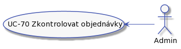
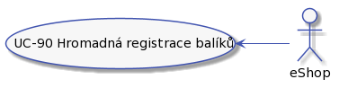

Analýza
Role
Máme tyto role:

Zákazník
Zákazník naší doručovací služby. Může to být fyzická osoba nebo společnost.

Zákaznik můze:
- UC-04 Registrovat balik.
- UC-05 Doručit balík do depa.
- UC-06 Sledovaní balíku.
- UC-07 Zaplatit za doručeni.
Uživatel
Představuje někoho, kdo má přístup do systému. Podle jeho dalši specializace má další možnosti.

Uživatel můze:
- UC-10 - Přihlásit se pomocí jména a hesla.
- UC-11 - Zapomenuté heslo.
- UC-12 - Zapomenutý login.
- UC-13 - Odhlášeni ze systému.
Dispečer
Dispečer je pracovník doručovací služby, odpovědný za činnosti s balíkem od převzetí balíku od dopravce až po předání dalšímu dopravci.

Dispečer je v depu. Depo bude umístěné tak, aby bylo v dobrém dosahu dopravců. Co dispečer dělá:
- UC-20 - Přijetí balíku.
- UC-21 - Zpracování přijatých balíků.
- UC-22 - Zpracování balíků v 'čekací frontě'.
- UC-23 - Zpracování balíků ve frontě dopravce.
- UC-24 - Zpracování balíků v 'chybové' frontě.
- UC-25 - Předání balíků dopravci.
Pracovník podpory
Pracovník naší doručovací služby. Vyřizuje reklamace, nespárované balíky a pomáhá s procesem doručení balíku.
Support může být fyzicky na centrále. Pracovník podpory je odpovědný za:
Správa uživatelů

- UC-31 - Filtrování uživatelů
- UC-32 - Změna/obnova hesla
- UC-33 - Zapomenuté přihlašovací jméno
- UC-34 - Přidat uživatele
- UC-35 - Zablokovat uživatele
- UC-36 - Upravit uživatele
Správa objednávek a balíků

- UC-40 - Kontrola bankovního účtu.
- UC-41 - Párování plateb.
- UC-42 - Řešení chybové fronty.
- UC-43 - Storno objednávky.
- UC-44 - Urgence zaplacení.
- UC-45 - Řešení přeplacených objednávek.
- UC-46 - Zobrazení detailů objednávky a balíku.
- UC-47 - Vystaveni dobropisu.
- UC-48 - TBD.
- UC-49 - Reklamace.
Admin
Pracovník doručovací služby, který dohlíží na fungovaní systému.

Co může dělat admin:
- UC-70 - Zkontrolovat objednávky
eShop
Zákazník, který má možnost zadávát hromadná posílaní balíků.

Zákazním může:
- UC-90 - Hromadná registrace balíků